MICROSOFT
MAY – AUG 2016
EXPLORER INTERN
Created a Microsoft Edge Extension for internal quality and development purposes in an agile environment. As a member of the Core Quality team for Microsoft’s Web Platform Team (WPT), I designed, developed, and measured an internal bug tracking Extension for Microsoft Edge that focused on excelling the efficiency and excellence of our team. Worked in HTML, CSS, JS, and various internal Microsoft Web APIs to create the frontend. As an explorer, my roles within the 12 weeks of my internship rotated between program manager and software developer.
PROGRAM MANAGER:
• Researched relavent technologies and services to better understand the project
• Created mock-ups of our extension, presented to manager and mentors for feedback
• Reached out to internal members of WPT to gain insights on features
• Designed implementation approach and specs for development phase
Initial mock-up designs:
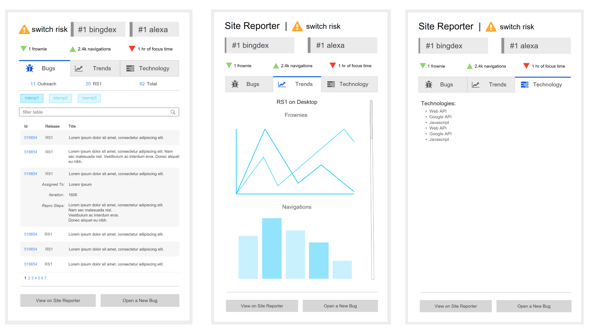
SOFTWARE DEVELOPER
Without diving too much into details, Microsoft’s WPT has an internal
website that displays pertinent information to our team about website domains (i.e. bug information,
trend information, etc.). In order to create a more efficient experience while browsing websites, our team
decided to create an extension that paralleled our internal website. This meant
working on a relatively new technology for Microsoft Edge (since extensions only
started rolling out in the Windows Anniversary Edition). The backend was built in C#, while the frontend
was built using Javascript, HTML, and CSS.
• Created a Microsoft Edge Extension using HTML, CSS, and JS
• Worked with API endpoints to query data for websites
• Aligned UI and design with WPT styles and conventions
• Worked with various JS libraries and including DataTables and
Highcharts
• Kept track of deliverables, tasks, and bugs in Visual Studio Online
SOFTWARE DEVELOPER IN QUALITY
• Implemented telemetry measures with Visual Studio Application Insights
• Tracked page views, events, exceptions, and metrics of our product
• Monitored uses of the extension after shipping within WPT
• Gained statistical insights to product’s performance and iterated the extension based on these
• Defined quality measures to track progress of the extension in Visual Studio Online
MICROSOFT
MAY 2016 – AUG 2016

QUADROTOR PROJECT
SEPT 2014 – PRESENT
TA & PROJECT MANAGER
CMU’s Robotics Quadrotor Club focuses on spreading education and research for quadcopters.
I joined the organization fall semester of my freshman year and have since become involved with
assisting a STUCO (Student Taught Course), co-leading a project subdivision of the organization,
and teaching high school students on a weekly basis about quadcopters.
Timeline of involvement with Quadrotor Club
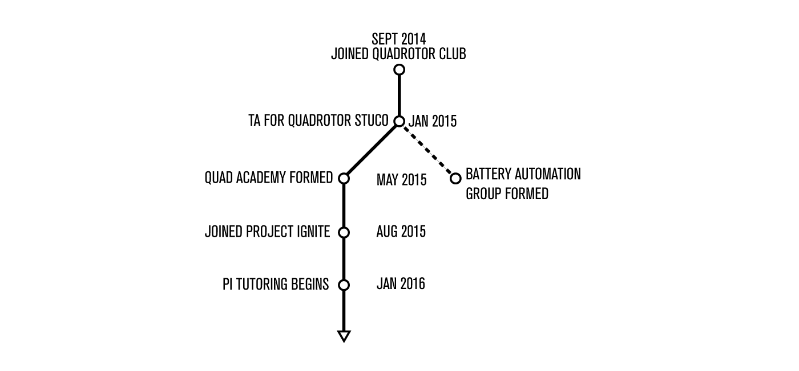
STUCO
At CMU, students are often allowed to teach courses to other students in what is known as a STUCO.
Our goal for this STUCO was to spread awareness and understanding of the technologies behind
Quadrotors, even if one had no technical background.
• Taught a class of 17 students varying from college freshmen to masters students
• Designed and developed curriculum for students
• Explained the various hardware components that went into a quadrotor
• Explained the physics and electrical engineering behind quadrotors
• Taught students how to use CAD software to design body frames
• Used technologies such as 3D printing and laser cutting to materialize CAD designs
Screenshot of CAD frame design
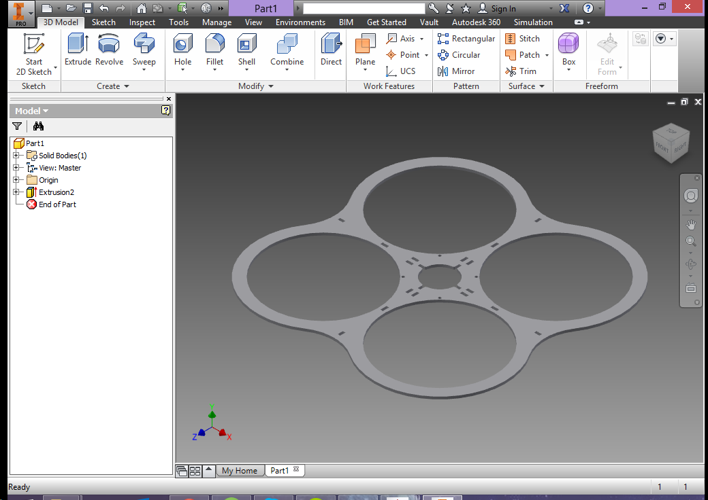
Student finalizing shape of laser cut frame
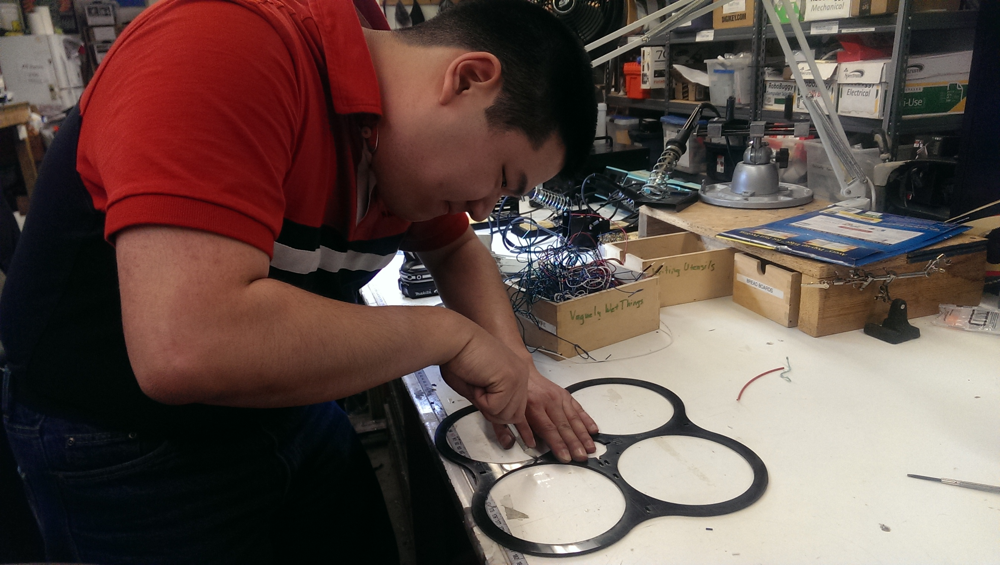
QUAD ACADEMY & BATTERY AUTOMATION GROUP
After the STUCO, our sizeable club decided to split into two separate branches in order to cover
different research and development fields. Quad Academy was formed, as well as an autonomous
battery recharging station group. The autonomous battery recharging group is currently focusing on
developing a station where LiPo batteries can safely and effectively be swapped out for a new pair.
I, along with a 5th year mechanical engineer (Kevin Apolo), pursued Quad Academy.
Quad Academy aims to help spread educational quadrotor kits to high schools
around the Pittsburgh area. These kits would help students learn basic programming, promote hobbyism, and
introduce concepts of hardware and electrical work.
Our lego quadrotor designed to be modular for accessible and development purposes
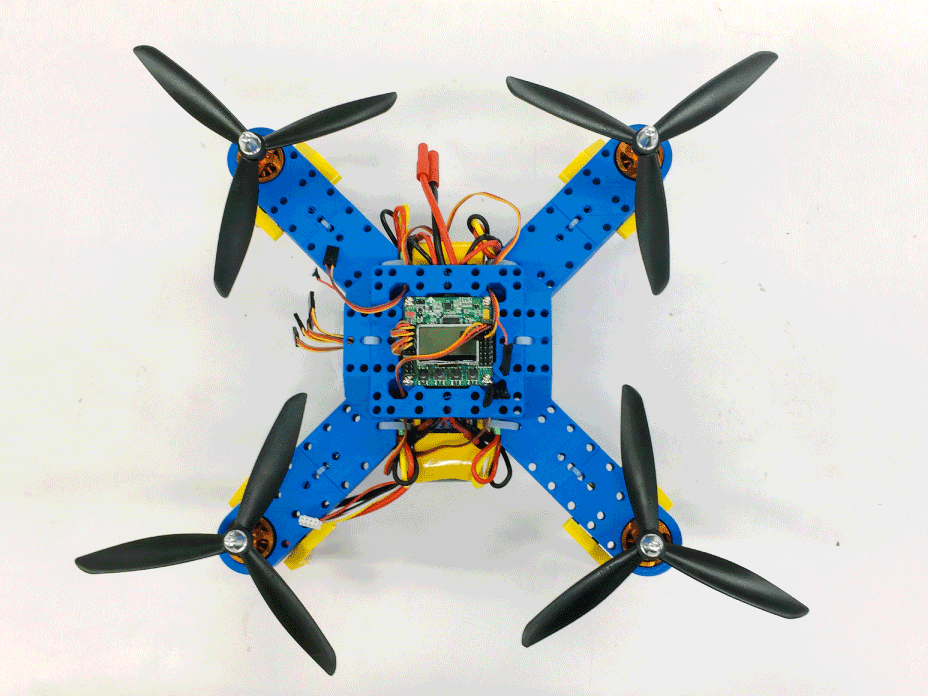
PROJECT IGNITE
The first initiative of Quad Academy was to get involved with high school students directly to test out a
prototype kit and tutorial course. We were looking to see how engaged this subject was for the students, how the
pricing of certain hardware components played out, and how to effectively structure the course’s curriculum. We
decided to join a new student organization, Project
Ignite (PI), focused on exciting high school students in projects and hobbyism.
• Designed and developed our quadcopter kit, as well as our academic curriculum
• Taught 6 students from local Pittsburgh high schools for four hours each week—for ten weeks
• Covered basics of what a quadrotor was (how it’s made, what parts are needed, what does each part do?, etc.)
• Covered physics behind quadcopters (roll, pitch, yaw, sinusoidal waves, etc.)
• Introduced programming in Python, Arduinos, and Raspberry Pi’s to students
• Taught students how to solder and how basic electrical engineering worked
• Taught students how to callibrate their flight controllers, tune/trim controllers, and fly their quadcopters
Video of our successful flying
Various pictures of our high school students working
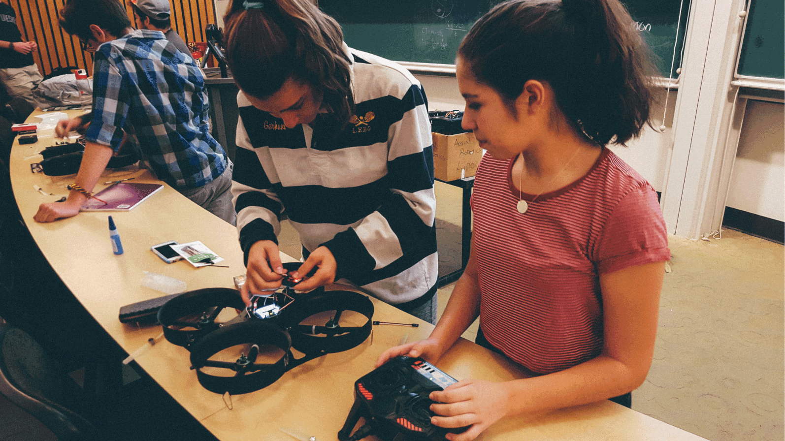
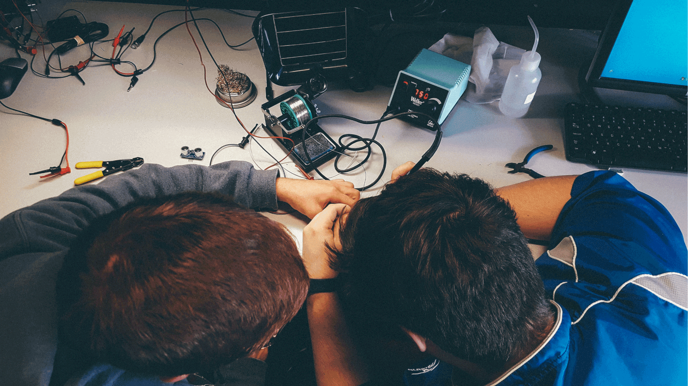
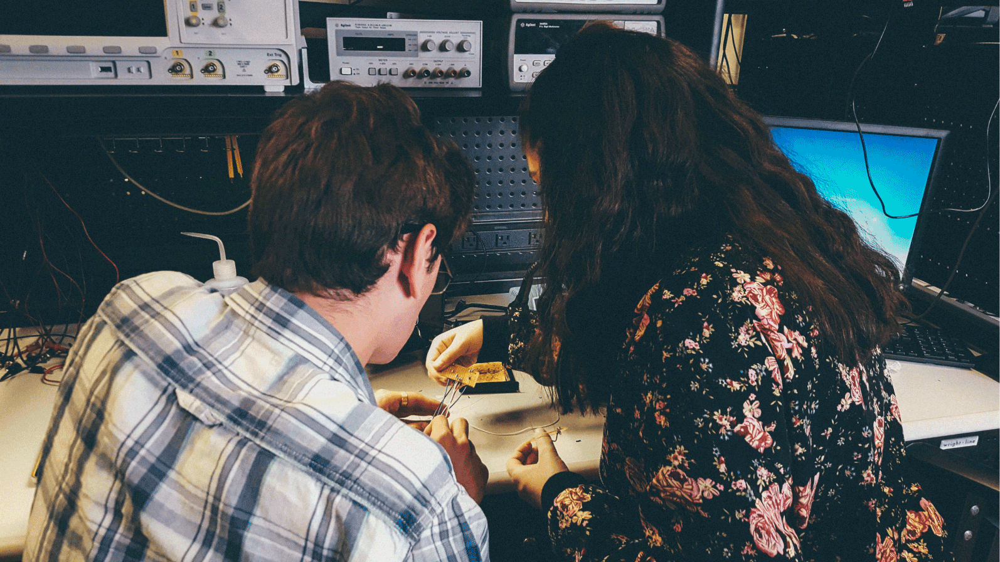
QUADROTOR PROJECT
SEPT 2014 – PRESENT
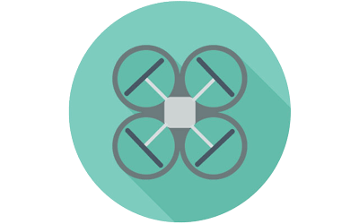PROTOLAB
SEPT 2015 – MAY 2016
DEVELOPER & RESEARCH ASSISTANT
Worked as a web developer for the fall semester and a research assistant for the spring semester under Carnegie Mellon University’s Human Computer Interaction Institute. In particular, I attended weekly SCRUM meetings for our lab—Protolab, discussed and critiqued ongoing projects, and learned aspects of design/UI/UX from various other peers and faculty.
I predominantly worked on a peer feedback system project, known as PeerPresents. This involved fixing bugs, improving the UI & UX, and designing and implementing an A/B test to deploy to classroom trials. Worked in HTML, CSS, JS (Node.js: Express.js & Jade Templating, Sockets.IO), and MongoDB. As a research assistant for PeerPresents, I digitized user data, assisted in the data coding process, and helped analyze a classroom case study.
PEER PRESENTS
PeerPresents is an online peer feedback system to improve the feedback process for in-class presentations. This project is an ongoing research project under Carnegie Mellon’s Human Computer Interaction Institute that aims to find the most effective feedback tool for students to utilize in classroom settings. The actual web application is implemented in Node.JS (Jade template and Express framework), Socket.IO, and MongoDB.
I joined the research lab (Protolab) in Fall 2015 as a web developer. The majority of the code base was already implemented from the summer, so I mostly joined to help debug and implement new changes to the system. I worked closely with another undergraduate student who served as the team’s designer, a PhD student who served as a developer, and our PhD lead over the course of the Fall semester. Our team improved the UI/UX of the overall system, fixed remaining bugs from the summer, and then implemented an A/B test that was deployed for testing towards the end of the semester.
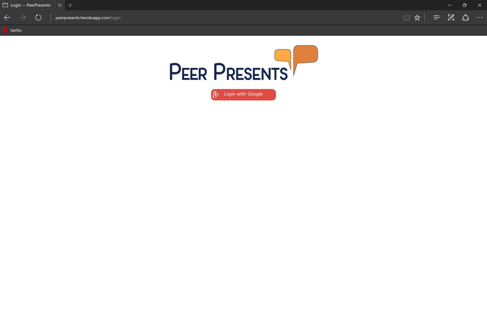
WEB DEVELOPER
Improving UI/UX:
Our team’s designer came up with a new logo, button design and placement, color scheme, etc. For the first few
weeks of being a web developer for this team, I was heavily involved with frontend work in order to make PeerPresents
more presentable to our users. We needed to be able to deploy our system to classrooms and therefore wanted to focus
on improvements of the UI.
• Provided feedback for the reworking of a new UI during weekly SCRUM sessions and team meetings
• Implemented frontend of new interface and design
• Changed application to be more mobile and tablet friendly
• Fixed layout issues throughout the system
Before:
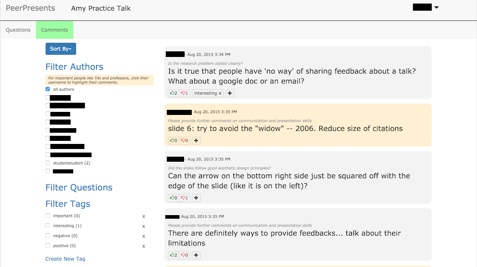
After:
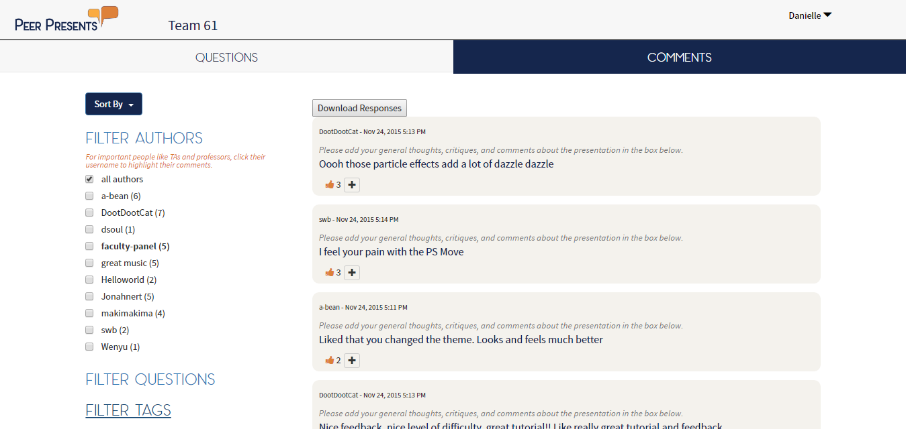
Implementing A/B test:
Towards the latter part of the semester, our team wanted to test new features to further the study of optimizing our tool. Brainstorming for this new topic was a process that took a few weeks, but in the end, we decided to test the impact of the tool’s interface on the user’s actions. In particular, we wanted to know whether a split version of an interface versus a combined version of an interface led to people commenting / voting more. For our system, people can comment their own thoughts. In addition, they can look at other feedback given from their peers and vote on those feedback. We decided to implement an AB-test where version A supported a split interface and version B supported a combined view. We hypothesized that the split display would lead to more commenting and less voting since switching between the tabs may be a deterring factor, and that the combined display would lead to less and more conservative commenting from users, yet more votes for other comments.
Our team brainstormed the design of the whole test and the interface of the new system in the first few weeks. Afterwards, it was a matter of implementing the two versions in our existing code-base. We randomly assigned the students to either group A or group B. Their account names were tracked in our database in order to figure out the switching of the groups. So for the first 2 weeks students in group A witnessed a split view of the interface, while the rest of the students spent it in group B with the combined views. After 2 weeks, we simply switched the students to the opposite group.
• Brainstormed designs for the A/B test (infrastructure, interface, experience, etc.)
• Participated in team discussions involving the research aspects of the test
• Implemented the backend and frontend of the new system
• Deployed the test to a classroom over the course of two weeks (fixed bugs along the way)
Version A (Split view):
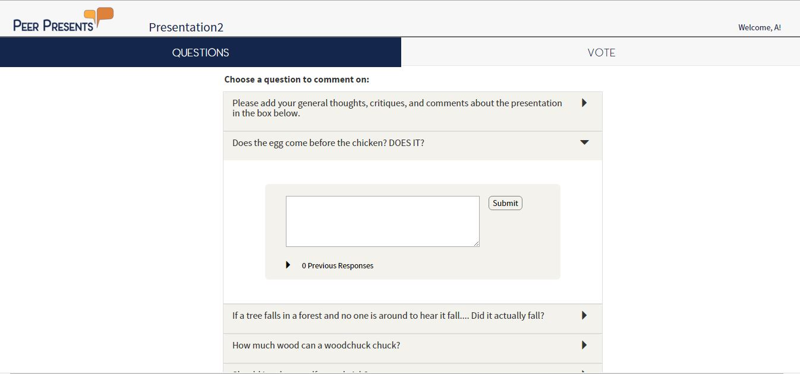
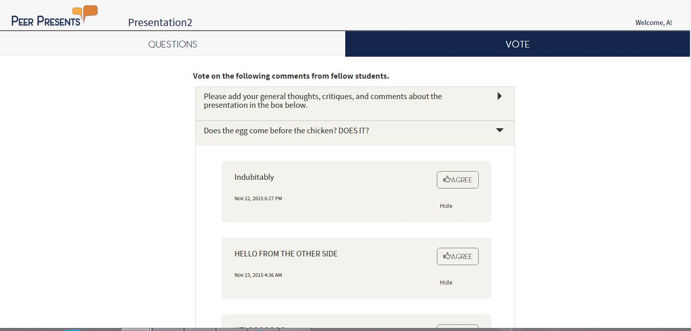
Version B (Combined view):
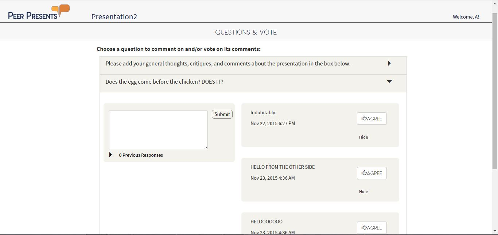
Quality Assurance:
Our web application needed to be fully functional for our classroom deployments. We planned to deploy to a particular class and have them use PeerPresents versus handwritten notecards for feedback. This process of deploying meant that we had to focus on any bugs present in our system.
• Fixed bugs involving UX (providing feedback for actions done by users, adjusting platform for mobile, etc.)
• Participated in bug crawls/bashes with the team in order to “break” our system
• Tested for traffic intensity and stability of PeerPresents
• Fixed issues involving our server crashing
RESEARCH ASSISTANT
In spring of 2016, my role in Peer Presents involved less development, and more analysis of our datasets. After deploying to two classrooms in the fall semester, our team gathered over 6000 real-time feedback comments from actual students in a classroom setting. I digitized a lot of the non-PeerPresents feedback comments that were provided by students on notecards. This step was rather long and tedious, but after a lot of the data was sorted and imported into excel sheets, our analysis of the actual data started kicking in.
I, along with our PhD lead and our other PhD developer, worked on coding the feedback comments that we received. This “coding” meant categorizing each comment by a student into respective labels. These labels help provide more context to whether or not PeerPresents is a more/less effective system for feedback commenting. Although I fixed bugs here and there, the majority of my work in the second semester involved reading notecards and excel sheets to try and clean the process of analyzing the data.
• Coded datasets in order to validate the consensus of our results
• Discussed the implications of our data in a team setting every week
• Digitized large datasets of feedback comments in order to better analyze our results
• Organized datasets in meaningful ways using Microsoft Excel in order to visualize our findings
PROTOLAB
SEPT 2015 – MAY 2016
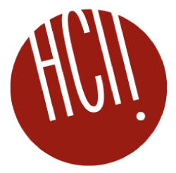SPIRAL
FEB – MAY 2015
RESEARCH ASSISTANT
SPIRAL is an on-going project under Carnegie Mellon University’s Electrical and Computer Engineering Department. The project focuses on addressing automated processes that create software and hardware that optimize digital signal processing algorithms. I joined a team of 3 others to help contribute to the understanding of power consumption in CPUs based on various parameters (clock frequencies, temperature, etc.).
• Performed power consumption measurements to map out relationships between power and clock frequencies in CPUs
• Worked with the Raspberry Pi to conduct measurements on its components
• Automated voltage and temperature measurements by writing a Python script
• Recorded and noted the trends in the various parts of the Pi by running matrix multiplication calculations using BLIS software
• Met weekly with researchers to discuss implications of our measurement findings
• Presented findings to broader SPIRAL team
PRESENTATION
Multimeter measurements conducted on various desktops, as well as a Raspberry Pi
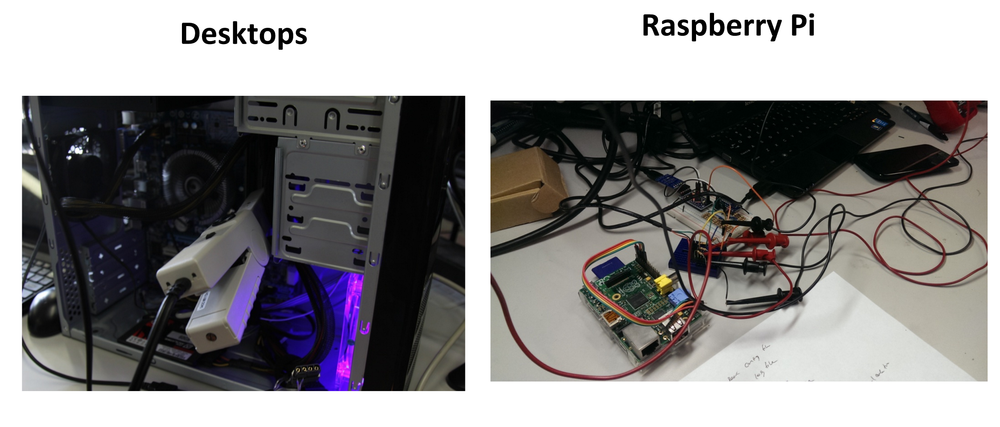
Various pictures of our research stations

Graphs of our measurement findings
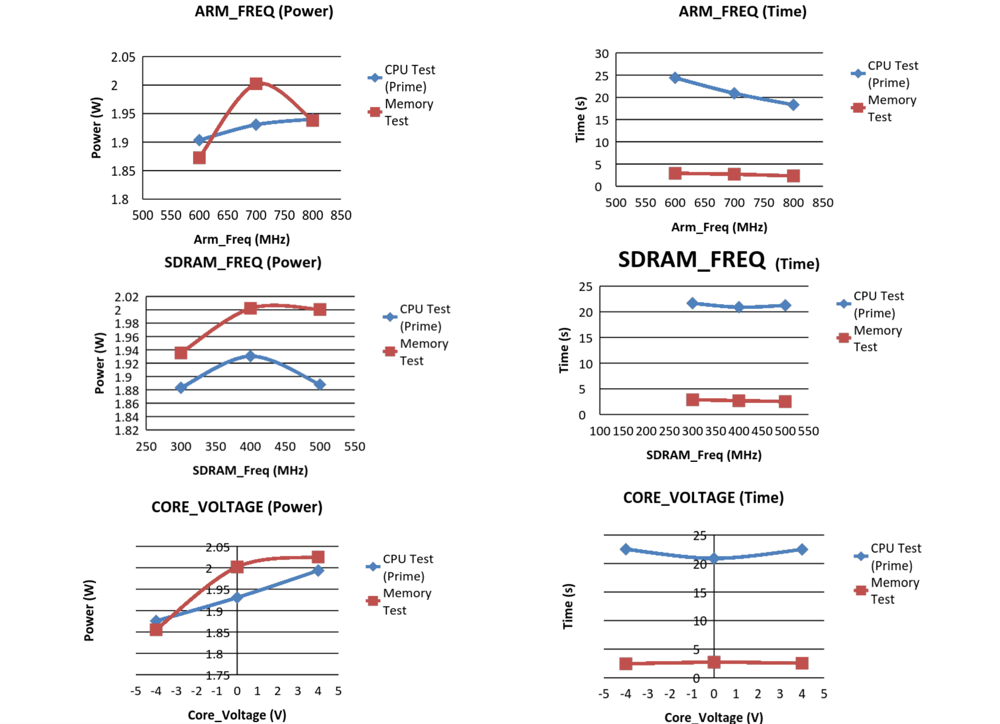
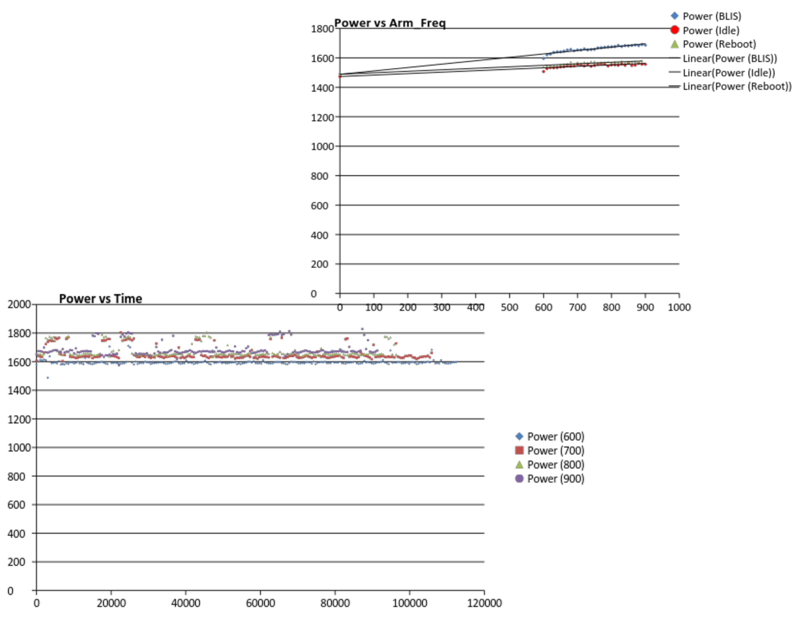
SPIRAL
FEB 2015 – MAY 2015
YOUNG SCHOLARS PROGRAM
JUNE – JULY 2013
INDEPENDENT RESEARCH
The Young Scholars Program is a 6 week high school program that focuses on STEM related fields. The program consists of 20 males and 20 females from around Florida. Students take courses in programming, mathematics, and the sciences; and are individually required to conduct an independent research project alongside a Florida State University research professor.
• Researched with Dr. Kun Yang on the subject of quantum entanglement and its effects on the advancement of modern technology.
• Researched in the National High Magnetic Field Laboratory in Tallahassee, FL
• Presented research findings in poster session for staff members of Florida State University
• Authored a research paper on findings
POSTER 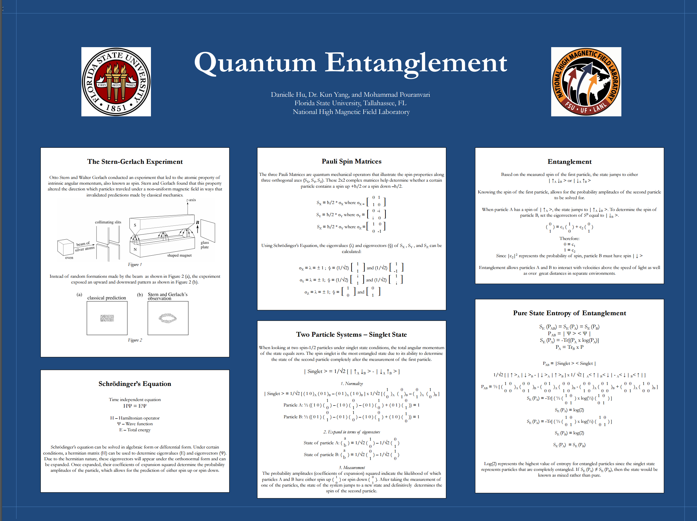
RESEARCH PAPER DOWNLOAD